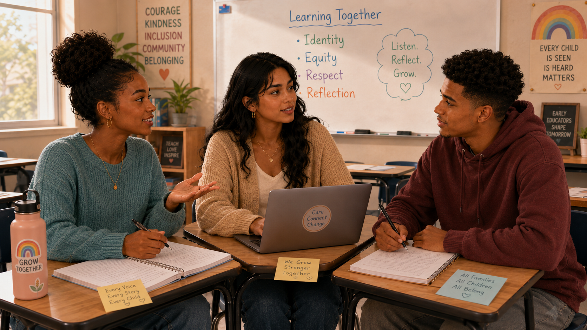

Professional identity
🔎 Choose the strongest response
Which statement best reflects the chapter’s view of teacher identity?
Professional identity, lived experience, knowledge, relationships, and equity-minded practice

Jordan: “I always thought becoming a teacher was mostly about learning strategies—how to plan activities, manage behavior, and teach new skills.”
Aaliyah: “Those things matter. But we also have to understand ourselves. Our values, beliefs, childhood experiences, culture, and memories of school shape the teachers we become.”
Maya: “If I have certain ideas about what a ‘good student’ looks like, or what a ‘good family’ does, I might bring those assumptions into the classroom without realizing it.”
Jordan: “So becoming equity-minded means asking why I teach the way I do, whose experiences I understand, and whose experiences I might be missing.”
Aaliyah: “It’s not about being perfect. It’s about being reflective enough to keep learning.”
Maya: “Professional identity is also about noticing the beliefs I already carry—and deciding which ones help children and families feel respected, supported, and included.”
Which statement best reflects the chapter’s view of teacher identity?
The descriptions are intentionally shuffled. Match each knowledge source with its best meaning.
A teacher believes “good families” always attend evening events. Several families rarely come. What is the best first response?
Why is experience alone not enough to ensure equitable practice?
Which action best reflects a reciprocal relationship with families?
Which question is most equity-minded?
Which professional-learning pattern best supports an evolving identity?
Why does the chapter connect teaching with democratic and just communities?
Which statement best integrates Esquivel Chapter 4?
Becoming equity-minded requires me to notice…
Professional identity grows from personal and cultural identity, formal knowledge, practical experience, and relationships.
Did your response mention assumptions, missing perspectives, family knowledge, access, bias, or the effects of your choices?
Self-reflection becomes meaningful when it leads to changed practice, stronger relationships, and more equitable participation.